- 27 Jan, 2017 (12:15)

Анонс ралли-спринта "Воложин-2017"
28 января 2017 года под Воложином пройдет 1-ый этап Кубка РБ по ралли-спринту. Если в прошлые годы сезон открывал Гомель, то в этом году снежным ралли порадуют зрителей в другой локации, которая раньше уже использовалась для проведения гоночных мероприятий. Близость к Минску позволит большему количеству зрителей посетить раллийную гонку, так и гонщикам, которые едут в основном также из Минска - облегчит логистику.Состав участников достаточно интересный. Мы увидим впервые в зачете BMW под управлением Никиты Куприенко. Также судя по списку участников "починился" Иван Русских - 2108 с новым кузовом заявлена в зачет. Юрий Семенчук поедет с новым штурманом, а его бессменный штурман Михаил Мельниченко будет курировать Семенчука-младшего на Renault Megane. В полноприводном зачете - всего лишь ОДНА единственная Субару Кирилла Ермаковича - ему нужно всего лишь финишировать для первого места. В классе Б-11 борьба за 1-ое место прогнозируется между экипажем Ковалевского/Щелокова и Семенчуком-старшим с необкатанным молодым штурманом. В классе Б-10 фаворитом является Гринкевич на Хонде Сивик. Конкуренцию ему попытается составить Иван Русских на ВАЗе, но возможно подтянутся и остальные участники - (второй раз за последнее время будет выступать опытный Цыганков на Форд Эскорт), а также представители команды mc2.by экипаж Мицкевича/Вашкевича на Ситроене С2).Также заявлен гость из Литвы Вилмантас Пупиус на BMW, но его участие еще под вопросом - в списке отсутствует штурман экипажа.Одним из ожидаемых моментов гонки будет появление легендарного Юрия Грищенкова на "темной лошадке" - ДИЗЕЛЬНОЙ Ауди 80 quattro, которая наконец-то достроилась и готова покорять раллийные ДОПы в этом году. Но на этой гонке, судя по списку - вне зачета. Интересно будет сравнить времена Ауди с Субару, хотя Юрий давно не участвовал, и эта гонка рассматривается скорее как тест уникальной концепции нового автомобиля...Удачи участникам и красивой снежной гонки без сходов всем!
Прочесть >> - 5 Dec, 2016 (13:12)
Раллийный сезон 2016 закрыли на спринте под Витебском
Последняя (в связи с отменой ралли Ушачи) раллийная гонка сезона прошла под Витебском 3 декабря 2016 в глуши Лиозненского района. И если полноценное ралли провести в этом году не судьба, то ралли-спринты проходят бодро и энергично, несмотря на небольшое количество участников.Всего в полноприводный класс Б-12 было заявлено 3 экипажа на Лансере и 2 Импрезах, такое же количество, как и в класс Б-10; а наиболее массовый Б-11 собрал 5 экипажей (сюрпризом стало участие Андрея Цыганкова на Форд Эскорт).Трасса представляла собой заснеженные прямики, заканчивающиеся 90-градусными поворотами, поэтому не совсем была похожа на обычную раллийную трассу, а скорее на тренировочный доп для отработки торможения. К тому же организаторы перестраховались и "отрезали" наиболее эффектный участок трассы от греха подальше - все-таки зимних гонок и тренировок у участников практически не бывает. Поэтому, к счастью, никто не улетел ни в одном из этих поворотов настолько, чтобы не продолжить гонку - все обошлось. Единственный сход Ситроена С2 Мицкевича/Вашкевича произошел по технической причине.Победителем в "абсолюте" закономерно стал экипаж Голобородько/Цырфа. Поздравляем Андрея с замечательным сезоном, который он провел стратегически и тактическо весьма грамотно, что позволило ему выиграть и Кубок и Чемпионат РБ в этому году!Отличную гонку провели москвичи Александр Симеоненков и Сергей Крестьянинов. Ребята "дубасили" так, иногда вылетали с трассы, косили деревья, но благополучно умудрялись вернуться обратно на трассу. Такой агрессивный стиль позволил им получить вторые времена, и если б не штраф, они бы заняли 2-ое место в "абсолюте". Но увы, из-за пенализации опустились на 4-ое.Этим воспользовался экипаж Ермаковичей на Subaru Impreza WRX STI. Они последовательно наращивали темп в течение всей гонки, и благополучно расположились в итоге на II месте в генеральной классификации. Кстати, за это также были удостоены Flat Out Trophy от команды "МЦ Квадрат Motorsport".На 3 месте в "абсолюте" расположился представитель Б-11 Юрий Семенчук и Михаил Мельниченко - экипаж многоопытный, и всегда стабильно навязывающий борьбу более мощному классу. Кстати Семенчук-младший проводит уже вторую гонку под штурманством Анатолия Шимаковского на Renault Megane.Ковалевского и Гринкевича в итоговой классификации разделила секунда! Все дело в штрафе в 3 секунды, за сбитую на ретардере фишку. Но надо отметить, что Хонда в более младшем классе, чем Рено, поэтому такой отрыв является очень достойным - все отметили агрессивную езду Гринкевича/Юденко, иногда даже на грани.Порадовало, что в Б-10 появилася старая-новая раллийка - Никозаченко и Ермакович выступали на Поло, который восстановили и покрасили в "фирменный" черный цвет. А у Алексея Кректуна гонка не слишком удалась - сначала он потерял время в одном из поворотов, а потом еще получил 3 секунды штрафа, поэтому и замкнул генеральную классификацию.Порадовала организация и компактность проведения гонки, все было четко и эффективно организовано. Организаторам большое спасибо. И хоть попасть в Большую Выдрею не так и просто - зато удовольствие от гонки тому отличная компенсация.Результаты:
Прочесть >> - 5 Sep, 2016 (14:02)
Ралли-спринт "Лепель-2016"
3 сентября состоялся этап Кубка РБ по ралли-спринту. Проведение было под угрозой срыва из-за малого количества участников, но организаторам все же удалось собрать 11 «боевых» экипажей и провести мероприятие.В классе Б-12 участвовало 3 экипажа. Победу в Б-12, как и в «абсолюте» закономерно одержал экипаж Голобородько/Цырфа. В отсутствие Сергея Вязовича, который уложил свой Эвик на гонке “300 озер” в Литве, никто не смог навязать борьбу Андрею и его Lancer Evo Х. В Б-11 быстрее всех примчался экипаж Семенчука/Мельниченко. Они даже «забрались» на второе место в абсолюте, опередив полноприводные машины. Хотя, если бы не штраф за сбитый ретардер, который получил Ермакович на Subaru Impreza WRX, Fiesta могла бы расположиться и на 3 месте.В Б-10 зрелищную и быструю езду показал экипаж Гринкевича/Алтуфьева на Honda Civic. Штурманом у Андрея был Данила Алтуфьев, который сам пилотирует раллийную Subaru! Экипаж заявился в последний момент, и порадовал себя 4-м местом в «абсолюте», а зрителей - эффектной ездой.Артем Брусянин вернулся в ралли после годичного перерыва, а штурманом у него выступал Виталий Мурылев (пилот Виталия - Иван Русских также «разложил» свою 2108 в Литве, и теперь восстанавливается). Смена штурмана видимо помогла Артему занять III место в Б-10. С первым подиумом!Команду «МЦ квадрат» представляло два экипажа, и оба на Ситроенах. Но если Мицкевич/Вашкевич успешно финишировали, то экипаж Тиминского/Новикова на своём С2 сошел с трассы на первом же СУ-1. Специальную награду FlatOut Trophy от mc2.by заслуженно получил экипаж Симеоненкова/Крестьянинова из Москвы. На СУ-3 после моста они почти перевернулись, но смогли вернуть свою Subaru на дорогу. В «абсолюте» ребята заняли 5 место, пропустив вперед две моноприводные машиныФотоальбом с гонки (фото автора):https://goo.gl/photos/bb7iRTEnMAVHtUPb8
Прочесть >> - 3 Aug, 2016 (20:46) 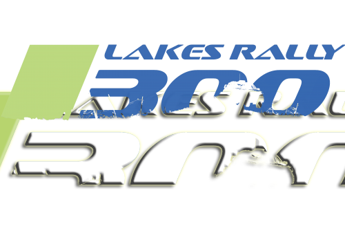
„300 Lakes Rally“ (Литва)
Анонс Ралли "300 Lakes"12-13 августа 2016 года состоится легендарное ралли "300 Lakes" (Литва). Для наших соотечественников, имеющих шенгенские визы и желающих увидеть по-настоящему крутое, интересное европейское ралли, - это отличная возможность! Ралли будет проходить в районе Зарасай-Висагинас, близко к нашей белорусской границе. Вы сможете увидеть большое количество экипажей из Литвы (36), Беларуси (9), России (8), Латвии (5), Эстонии (3), Германии (2 раллийных Трабанта!), совместный экипаж пилота из Саудовской Аравии и штурмана из Финляндии, и по одному экипажу из Польши, Израиля и Голландии.Ивент совмещает с собой 3-ий выездной этап ЧМ РБ по ралли!Вся информация:http://300lakesrally.lt/enСписок экипажей (уже 75!): http://www.autorally.lt/300LakesRally/ (мы под 64 номером)ОБНОВЛЕНО:Видео нашего крэша :(
Прочесть >> - 14 Jul, 2016 (13:46)

Наш отчет о Ралли Псков "900 озер"
8-9 июля в Псковской области в районе г. Опочка прошло ралли "900 озер". Предлагаем вам наш отчет о прошедшем мероприятии глазами нашего экипажа.В рамках этого ралли состоялся 2-ой (выездной) этап Чемпионата Беларуси по ралли.На старт вышло 74 экипажа, из них в этап чемпионата РБ заявились 28 экипажей (как российские, так и "наши"). В нашем классе Б-10 стартовало 12 экипажей (для сравнения в Б-11 и Б-12 - по 8). Всего на гонке белорусских машин стартовало 8.Стартанули после обеда из Минска 7-ого июля, и уже за полночь разместились толпой МЦ-шников в кемпинге Веснеболог. Должны были ехать с тремя боевыми машинами, но в последний момент у Александра Мицкевича отказал мотор на его Ситроене С2. МЦ квадрат представило два "болида" - мы и Ситроен С2R2 Николая Тиминского:Следующее утро началось с администратировных проверок в г. Опочка. "Прописочная" машина начала барахлить уже по дороге туда, но до штаба мы добрались. Регистрировались вместе с известным экипажем гонщиков Грязин/Лебедик, которые презентовали свой проект "Готовая стенограмма" - и все желающие могли ехать по ней. Но мы предпочли написать свою.На прописке столкнулись с трудностями, "прописка" не хотела ехать... удалось прописаться только один раз, и стенограмма осталась непроверенной... Это не могло нас не огорчить. Главный судья Олег Мыслевич не разрешил на прописаться на бусе из-за узкого моста - но есть документальное видео про то, что народ на бусах там проезжал...Вечером ралли торжественно открылось на центральной площади г. Опочка, где пилотам (в обратном порядке стартовых номеров) предлагалось продемонстрировать свое водительское мастерство. После прыжка у нас лопнула передняя тормозная трубка, и финишный створ мы пересекали уже при помощи ручника:Слалом и кубок главы Опоческого района выиграл Алексей Лукьянюк. Ехал действительно эффектно: На следующий день - сама гонка! Поскольку наш стартовый номер "60" был где-то в хвосте пелетона, на первый доп мы попали где-то в 11:26, а по пути открылся капот.. Но мы не унывали.. не унывали.. не унывали, пока в крыло опять-таки на перегоне не прилетел "камешек" от проезжающей встречной машины и не сделал нам глубокую вмятину.Кстати о перегонах (фото выше)... Дорога была очень тяжелая, проходила местами просто по грунту в поле, а иногда нас поджидали "брод твёрдо" и узкие деревянные мосты. Прошедший накануне дождь размыл этот перегон, и стало вязко и больше похоже на трассу для джип-триала. Организаторам все же надо было подумать, прежде чем пускать туда ездить обычные гражданские машины. Но мы нигде не застряли...Первая секция прошла под знаком осваивания с новой КПП - которую мы только установили, но ни разу не проверяли в "боевых" условиях. Борьба с коробкой наглядно проиллюстрирована на этом видео:На вторую секцию выехали с твердым намерением ускориться и "цапнуть" у экипажа Тиминского/Новикова очко времена :), но недостатки стенограммы, мастерства, и внезапно хлынувший ливень посреди проезда не позволили нам это сделать. Финишировали в "хвосте", как и начинали. Из активов: бесценный опыт первой международной гонки, знакомство с обновленной техникой и приятная усталость после финиша :). ДОПов по 20 км у нас раньше еще не бывало :)На закуску - онборд самого зрелищного и трехмерного допа с захватывающей конфигурацией, под названием "ПсковАвтоДор". СУ-3 (первый проезд):P.S. Уважаемые зрители! Не гоняйте по ДОПам после открытия трассы. На гонке "убралось" три машины - пожалейте себя и свою собственность!Фото: Алиса Зацаринная и зрителей => в Галерее.
Прочесть >> - 11 May, 2016 (12:02)

Ралли Браслав 2016. Гонка сходов.
Первый этап Чемпионата РБ по классическому ралли прошел в субботу, 7 мая в окрестностях Браслава.Изначально планировался более протяженный маршрут, но потом под угрозой оказалось само проведение гонки из-за малого количества заявившихся экипажей. В итоге - гонка состоялась, но по более короткому, видоизмененному маршруту:Браславское ралли - одно из самых старейших в стране в современной истории, проводится более 10 лет. Оно очень популярно у болельщиков и гонщиков разных стран, потому что расположено в живописном уголке Беларуси, среди большого количества очень красивых озер, а трассы представляют собой широкие гравийные ДОПы с многочисленными трамплинами и поворотами. На старт выехало всего 14 экипажей. Наш экипаж участвовал в гонке под номером "15". Но поставленная задача успешно финишировать так и не была выполнена! Браслав нам не покоряется второй год подряд!Гонка изобиловала техническими сходами, а Субару гостя из Москвы Александра Симеоненкова даже оказалась на крыше! Итого - финишировало всего 8 экипажей!...В классе Б-12 и в абсолюте победу праздновал экипаж Сергея Вязовича и Дмитрия Ахремчика. И это притом, что машина для Сергея была совсем новой и незнакомой, а также были проблемы с перегревом двигателя. И при этом отставание Лансера Андрея Голобородько от лидера составило полторы минуты.В Б-11 и в моноприводе победителем вышел экипаж Ковалевского/Щелокова на Рено. Вторым расположился Николай Тиминский - а третьим экипаж Семенчука/Мельниченко, который всю первую секцию ехал со сломанной полуосью, и потерял много времени.В Б-10 победу праздновал экипаж гостей из России на Ситроене Saxo. Вторым стал Иван Русских, для которого гонка прошла очень сложно (были и вылеты, и заглохший двигатель) - а третьим Мицкевич/Вашкевич, которые потеряли много времени из-за сломавшегося колеса и трех пробитых покрышек. (Таким образом, в нашем классе Б-10 у нас были бы все шансы занять второе место, если бы на нашей Тойоте не сломался генератор...)РЕЗУЛЬТАТЫ:Онборд СУ-3: Вся информация о прошедшей гонке доступна здесь: http://autosport.by/news/a-74831.htmlФото: ABW.BY
Прочесть >> - 18 Feb, 2016 (18:32) 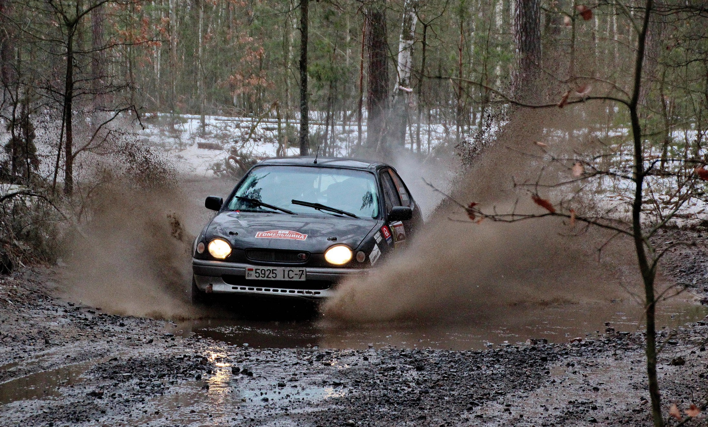
Ралли-спринт "Гомельщина-2016". Ожидания и реальность.
Первая раллийная гонка сезона "Гомельщина-2016" прошла под знаком нереализованных надежд, которые разбились о жестокую реальность так называемой "зимней белорусской погоды". Гонка все же состоялась 13 февраля 2016 года в Лоевском районе, в 49-и км. от Гомеля. Ниже - впечатления нашего экипажа о прошедшей гонке...В первую очередь, мы настраивались на победу, или по крайней мере на 2-е место в классе Б-10. Да и в "моноприводе" тоже хотелось побороться за очки. Тойота была подготовлена. Настрой был боевой. Конкурентов мы знали - это Иван Русских и Сергей Выдронок - оба на ВАЗ-ах. Опытные гонщики, не чета нам, но все таки хотелось надеяться на нашу более совершенную технику, удачу+везение и тот небольшой опыт, который у нас имеется. Но - не срослось...Во вторую очередь, этап должен был стать "завораживающей зимней гонкой" - а оказался грязным и слякотным. Увидеть в Беларуси зимнюю и "снежную" раллийную гонку болельщикам не получилось и в этом году. То, что мы все поодевали "злые" шипы, не помогло держаться на дороге уверенно, из-за этого приходилось "осторожничать". И времена были даже меньше чем на Форде в прошлом году! (Как это было в прошлом году - читайте у нас на сайте: Ралли-спринт "Гомельщина" (2015) Первый СУ мы проехали за 5:32, что ввергло нас в уныние. Но потом, сравнив времена с "одноклассниками", мы немного воспряли духом. Ускоряться надо было все равно, что мы и сделали на СУ-2. проехав его за 5:17 (онборд "в качестве" ниже):СУ-3 был отменен из-за страшной аварии экипажа Ермаковича:Получается, что второй год подряд раллийный сезон начинается с того, что кто-то разбивает Субару. С невеселым настроением мы в дорожном режиме доехали до конца допа, развернулись и... проехали СУ-4 ЕЩЁ хуже! Наш "полет" бессознательности над разумом преградило дерево в связке ПР х ЛВ поворотов... Как результат - 3 место в Б-10 и куча мыслей для размышления. Слава богу, что доехали!Можно резюмировать, что ни с одной из поставленных задач мы не справились - мы не заработали очков команде MC2, за которую в этом году выступаем, проехали небыстро, опыт езды по такому покрытию пригодится нескоро (если вообще не забудется), и как и где ускориться - мы так толком и не выяснили для себя. Так что вывод только один - что было в Гомеле - должно остаться в Гомеле! ☻ До новых встреч! Дорога на доп от Гомеля:РЕЗУЛЬТАТЫ ГОНКИ:ДО ВСТРЕЧИ НА СЛЕДУЮЩИХ ГОНКАХ!Галерея с гонки на сайте:http://avrc.by/gallery/0f2c4d2691e3ea317904f1a3f073168bФото в статье: Алиса Зацаринная
Прочесть >> - 11 Nov, 2015 (14:26) 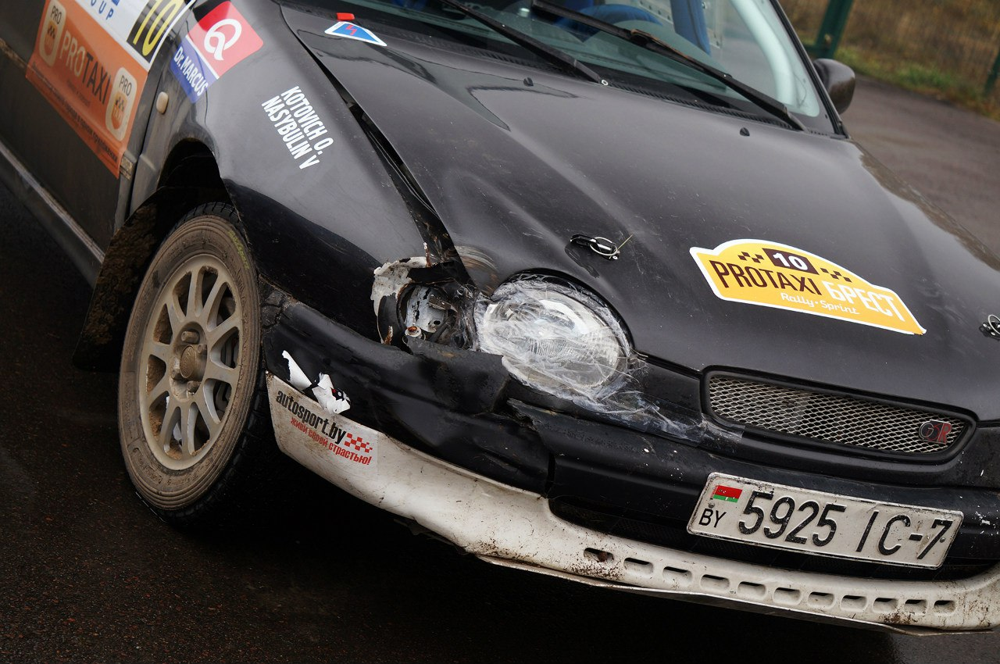
Ралли-спринт "Брест-2015". Сезон закрыт.
7 ноября 2015 г. в "красный день календаря" состоялась последняя раллийная гонка сезона - ралли-спринт PROTAXI Брест 2015. Как это было глазами нашего экипажа - читайте ниже.Главной неожиданность перед стартом для нас стало то, что организаторы разрешили шипы! Как?? Это автоматически лишало нас всякого преимущества перед автомобилями на т. н. "гвоздях"...Грунтовый доп и так, будучи очень скользким, - еще стал и капитально разрытым. На втором проезде эта раскопанность помешала затормозить и "завернуть" машину куда надо - в итоге - встреча с деревом!..Поврежденными оказались бампер, крыло, фара с поворотником и кусочек капота, но "жизненно важные" радиатор и маслокулер оказались не задеты. И мы продолжили гонку... в несколько другом образе...Доп постепенно превращался в "кашу". На СУ-4 ехать было уже невозможно, и мы себе же и "привезли". Но задел предыдущих проездов позволил нам выполнить задачу максимум на эту гонку - придти первыми. Попутно мы еще приехали и 3-ми в моноприводе, что явилось неожиданным приятным бонусом. Все! Сезон 2015 года закончен, мы третьи в Кубке РБ в своем классе! Насыщенный год, удачное окончание! Будем отдыхать, чинить авто и готовиться к сезону 2016! Галерея с гонки на сайте: Ралли-спринт "Брест-2015"Онборд-видео СУ1:P.S. Очень жаль Николая Тиминского, который перевернулся два раза на своем Ситроене С2R2 (на видео выше на 4:40). Экипаж не пострадал, но на машине нет практически ни одного целого элемента... Удачи ему в восстановлении!Фото в статье: BrestCITY.com, Алиса Зацаринная, Rally2.by, Виртуальный Брест, Дилер Холл и ROADRUNNER'S.
Прочесть >> - 30 Oct, 2015 (11:30) 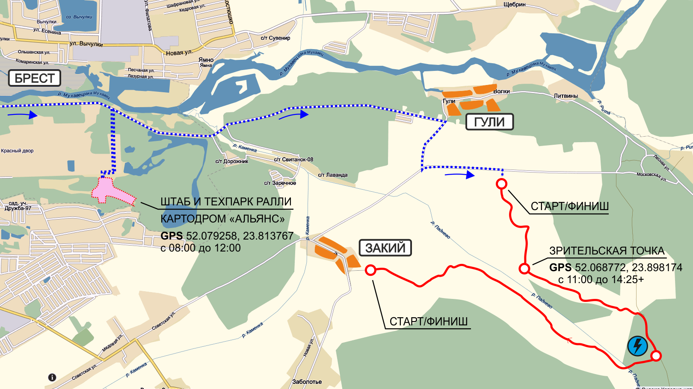
Анонс ралли-спринта "Брест-2015"
Приглашаем всех посетить город-герой Брест 7 ноября 2015 года (суббота). В этот праздничный день состоится последний этап Кубка Беларуси по ралли-спринту, в котором мы также примем участие. Этот последний этап будет завершать сезон, и наш экипаж будет подводить итоги этого насыщенного раллийного года, в котором мы впервые поехали в ралли, построили собственный автомобиль, и заработали первые очки и подиумы.Программа мероприятия:08:00 - 11:48 Подготовка спортивных автомобилей в техпарке (картодром “Альянс”);12:00 - 12:15 Торжественный старт гонки (картодром “Альянс”);12:15 - 12:50 Гонка на первой секции (окрестности н.п. Закий);12:50 - 13:50 Сервис для автомобилей участников (картодром “Альянс”);13:50 - 14:30 Гонка на второй секции (окрестности н.п. Закий);14:30 - 16:00 Выставка спортивных автомобилей (картодром “Альянс”);16:30 - 17:00 Пресс-конференция с лидерами (здание картодрома);17:00 - 17:30 Торжественное закрытие и награждение экипажей в закрытом парке.Схема спецучастка:СПИСОК ЗАЯВЛЕННЫХ ЭКИПАЖЕЙ№КОМАНДАTEAMВОДИТЕЛЬ 1ВОДИТЕЛЬ 2НАЦNATАВТОМОБИЛЬCARКЛАССCLASS1ГолобородькоЦырфаBLRMitsubishi Lancer EVO XБ-122АлтуфьевМинкевичBLRSubaru ImprezaБ-123ДОСААФВязовичАхремчикBLRSubaru Impreza WRX STIБ-124ДОСААФ ГомельСеменчукМельниченкоBLRFord FiestaБ-115КовалевскийЩелоковBLRRenault Clio RSБ-116MC2ТиминскийНовиковBLRCitroen C2R2Б-117MC2НасыбулинКотовичBLRToyota Corolla G6RБ-108MC2МицкевичВашкевичBLRCitroen C2Б-109ВашкевичФилоненкоBLRVW GolfБ-1010ДОСААФ ГомельКрупенькоКондратеняBLRRenault MeganeБ-1111Подробности на Rally2.by.ДО ВСТРЕЧИ НА ГОНКЕ!
Прочесть >> - 28 Oct, 2015 (12:04) 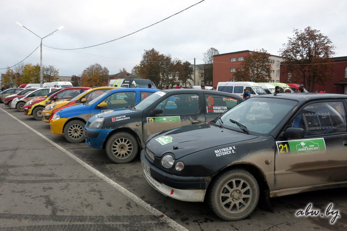
Ралли "Лесные озера" 2015. Как это было (взгляд изнутри)
24 октября 2015 г. (суббота) в Ушачах прошел 5-й и последний этап Открытого Чемпионата Республики Беларусь 2015 года по ралли. Старт ралли был намечен на 10:00, завершение планировалось около 17:00 на центральной площади г. Ушачи, напротив исполкома. Первая секция прошла в районе деревень Кубличи, Зерченицы, Бычки и Сорзово, вторая секция после 45-минутного сервиса - в районе деревень Бычки, Сорзово, Замошье с финишем в г. Ушачи.Предлагаем вам небольшой отчет о гонке глазами нашего экипажа...Выехали в Ушачи 22.10 в четверг вечером. Очень хотели успеть на административные проверки, но поскольку ремонт "технички" затянулся - не успели - штаб был уже закрыт. Поехали на базу "Лесные озера", куда чуть попозже подтянулись и остальные "МЦ-квадратовцы".На следующее утро, пройдя административные проверки, и оставив Короллу Юре Грищенкову для прохождения техконтроля, уже в 10 часов были на прописке первого СУ "Зерчаницы". Понравилась компактность расположения спецучастков и небольшие перегоны между ними. Прописку мы завершили даже раньше положенного; сдали карту ознакомления в штаб и опять вернулись на базу - надо было переодеться в спортивные шмотки для торжественного открытия на площади в Ушачах.Нам был присвоен последний 21-ый номер, так как мы до этого на "большом" ралли были только в Браславе, да и то в "нулях" на Форде (про это есть статья на сайте). И если первые экипажи проезжали через "рамку" засветло, то мы подъехали к ведущему, когда уже хорошо стемнело :).Следующее утро нас встретило пасмурной погодой и небольшим дождиком. Трасса была скользкая, а поскольку мы ехали последними - то и еще хорошо разрытая предыдущими экипажами. А поскольку для Короллы это вторая гонка, и потенциал машины еще не до конца изучен - то первую секцию мы ехали медленно, прикатываясь к дороге, и постепенно ускоряясь. Каково было наше удивление, когда после первой секции мы оказались не последними! После регруппинга за нами уже расположилось несколько экипажей.Вторую секцию мы поехали немного побыстрее, но и трасса стала более разрытой и скользкой, и погода не сильно радовала. В итоге нам удалось остаться на нашей позиции, закрепив ее, и немного не доехав до Анастасии Мироновой 8.6 секунды. В абсолюте мы пришли 13-ми, а в классе - 4-ми. Так что в этом году в чемпионате у нас призовых мест нет. Надеемся на следующий сезон!Фото в статье: ABW.BYАнонс гонки: http://autosport.by/news/a-74777.htmlИнформация и подробности о гонке: http://autosport.by/news/a-74793.html и http://www.abw.by/news/185519/
Прочесть >> - 14 Sep, 2015 (18:21) 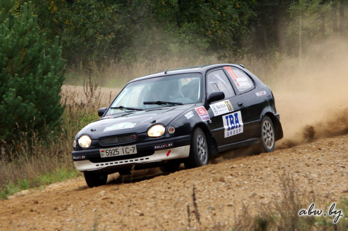
Ралли-спринт "Лепель-2015"
12 сентября 2015 года в окрестностях города Лепель состоялся 3 этап Кубка РБ по ралли-спринту. Наш экипаж под порядковым номером "11" поехал туда на новой свежесобранной Тойоте Королле. После прописки мы пересели в "боевую" машину, сделали пару кругов по главной площади Лепеля (в этот день проходил праздник города) и умчались на доп.Погода была солнечная, ясная, дождя не было, 10-ти километровый доп оказался очень красивым, быстрым и не сильно коротким, что нам очень понравилось. Поскольку гонка проходила в "обкаточном" режиме, задачи побеждать не ставилось - автомобиль был загадкой, поскольку тренировки на нем проходили на поле, и как машина поведет себя в лесу на извилистом гравии, представлялось непонятным.Первые СУ-1,2 мы привыкали к трассе, к машине, крутили регулятор тормозов и испытывали сцепление с дорогой на резине, которую поставили за день до гонки - и не успели проверить "держак". Последующие проезды мы начали ускоряться, и "привозить" самим себе по 20-30 секунд с допа:К последнему СУ-5 мы окончательно "вкатились" в трассу; начали получать удовольствие от хорошей быстрой езды (онборд прилагается):В результате мы приехали на 3-е место в Б-10, что считаем достойным для первого тестового проезда на нашем автомобиле."Виктор Насыбулин и Олег Котович в Лепель приехали на новом для себя автомобиле - 160-сильной Toyota Corolla, так что часть дистанции была потрачена на знакомство с техникой. Тем не менее на подиум класса Б10 ребята взошли в качестве бронзовых призеров. " (abw.by)Фото в ГалерееВсе результаты:
Прочесть >> - 18 Jul, 2015 (20:30) 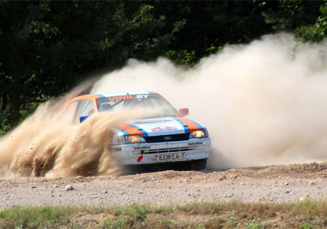
Ралли-спринт "Гродно-2015"
Незапланированный календарём ралли-спринт в Гродно, оказался неожиданным летним сюрпризом для всех раллистов. К сожалению, он был "вне зачета", победители очков в Кубке не получали, поэтому зарегистрировались лишь энтузиасты, вроде нас, и те участники, у которых техника была готова. У тех, у кого техника еще готовилась к "300 LAKES RALLY" - данное мероприятие проигнирировали. А Форд - всегда готов!Проходило это в рамках фестиваля SUNDAY в окрестностях деревни Каролино, что под Гродно. И опять - традиционно далеко от Минска, из которого мы уже добирались в этом году во все углы, равноудаленные от нас. Ну нет в Минске ралли - приходится ехать за 300 км! Опять!.. В этот раз мы ехали "боевым экипажем" - закончился нулевой период, теперь все "по-взрослому". Организация и подготовка посложнее, чем ехать "в нулях", но мы вроде бы все подготовили, все бумажки подали, нас допустили, выдали дорожную книгу, и мы поехали прописывать аж 8 СУ (четыре трассы в одну и в другую сторону). Ралли проходило с другой стороны Гродно - поэтому надо было проехать всё Гродно, выехать на восток и там кататься между деревнями, тратя кучу времени. Опять (!) не успели все прописать по два раза, и это уже становится "традицией"...В нашем Б-10 классе было заявлено больше всего экипажей - аж (!) 4 машины! После недопуска Артема Брусянина остались только С2 Мицкевича, 2108 Русских и наш Форд. На СУ-2 мы эпично вылетаем в кукурузу, на ретардере, и теряем минуты 4 (как написали в Автобизнесе "На грани выбывания оказались Виктор Насыбулин и Олег Котович..." см. http://www.abw.by/news/183655/)Поскольку Форд хронически не заводился со стартера, пришлось его выталкивать и расталкивать из кукурузы - спасибо болельщикам, судье и милиционеру - и только таким образом мы смогли продолжить гонку. На СУ-4 не стартовал Мицкевич, и мы продолжили гонку на доезд в тени Лады Ивана Русских, потому что тягаться с более мощным "тазиком" на Форде было бесполезно. Ну что сказать - первый пьедестал, диплом, медаль за 2 место в не самом насыщенном участниками ралли - все равно отлично!Результаты (в том числе и наши):https://drive.google.com/file/d/0B6lfZX_slJNtUlc0c0k2UE1yRkU/viewФото в галерее "Гродно-2015".
Прочесть >> - 15 Jul, 2015 (12:00) 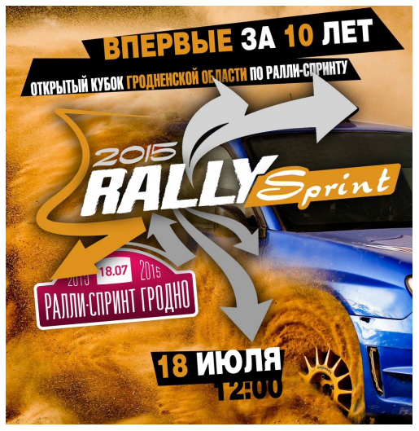
Анонс ралли "Гродно"
В Гродно 18 июля впервые за последние десять лет пройдет ралли-спринт «Гродно 2015» . Старт будет дан с площадки авто- фестиваля SUNDAY в 12:00, затем участники поедут в район деревень Путришки, Забогоники и Старина где расположены специальный участки (СУ). Между двумя секциями экипажи заедут в сервис-парк расположенный в Вертелишках, а затем финишируют на площадке SUNDAY.Подробнее: http://autosport.by/news/a-74739.html
Прочесть >> - 3 May, 2015 (02:30)

Браслав Ралли 2015
В теплый майский Браслав мы отправились накануне вечером в четверг, 30 апреля. По дороге повредили колесо на лафете, хорошо - недалеко от базы отдыха "Дривяты". С утра в пятницу мы зарегистрировались нулевым экипажем "00" и поехали на прописку. На полноценное двухдневное ралли мы в качестве участников приехали первый раз, к тому же Браслав - это мекка белорусского ралли, и на прописке мы еще раз убедились почему... Широкие и быстрые гравейные трассы, скоростные прямики, кое-где был асфальт - для нескоростного Форда не вариант :). Прописаться по два раза каждый СУ у нас не вышло. Сказывается отсутствие практики участия в соревнованиях такого уровня.После прописки мы сдали карту ознакомления в штаб, "профукали" инструктаж нулевых экипажей, и нас не пустили на первый доп. Все же удалось проехать следующие допы, и закончить первый день в строю......Чего нельзя сказать про второй день. Допы были длинные, Форд медленно, но верно кипел. В техпарке в перерыве секций механики попытались реанимировать Форд, но в итоге он не доехал - заглох на повороте и уже не завелся.В первый раз опробовали табличку "ОК". На этом выступление закончили. Поскольку колесо на лафете в Браславе отремонтировать не удалось ("- А где в Браслав в субботу вечером ближайший шиномонтаж? - В Минске") - оставаться на воскресенье смысла не было, и мы потянули Форд на веревке в Минск. Вот такая утомительная вышла поездка... Пару фоток в галерее
Прочесть >> - 10 Mar, 2015 (11:00) 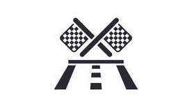
Покупка Короллы
Подробнее о нашем проекте постройки раллийной Короллы читайте здесь и на Drive2.ru
Прочесть >> - 28 Feb, 2015 (10:00) 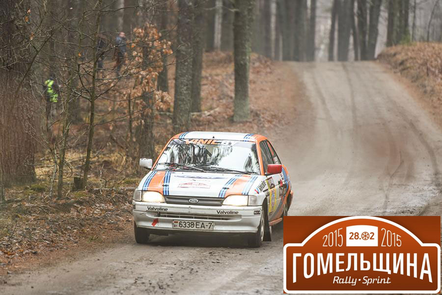
Ралли-спринт "Гомельщина"
Зимняя Гомельщина (на фото выше) больше напоминала или весну, или осень, с раскисшими дорогами, лужами на спецучастке, который, к слову, был незнаком большинству ралллистов, приехавших туда для участия в ралли-спринте "Гомельщина -2015". Большинству - но не всем. Для экипажей из Гомеля Юрия Семенчука на Ford Fiesta и Виталия Крупенько на Renault Megane эта трасса считалась "домашней". Для нашего же экипажа, выступавшего всего второй раз в жизни - любой спецучасток - это целое открытие :).Настолько узко было в гомельском лесу (точнее, это был Лоевский район, деревня Рудня-Каменева, 50 км от Гомеля на юг на территории Днепро-Сожского заказника) - настолько мы пытались ехать аккуратно, чтобы не задеть ни одно из многочисленных деревьев. Удалось записать онборды, по которым можно видеть, насколько там узко и страшно ехать. Их можно посмотреть в Галерее.Закончилось ралли победой экипажа Синебок/Вихренко в абсолюте, который на одном из проездов неожиданно вылетел с трассы, "промазав" мимо поворота (видео ниже): Мы неплохо проехали всю гонку, у нас были неплохие времена, и со стороны, по словам зрителей, мы смотрелись также нормально. Такие спецучастки в первую очередь требуют водительского мастерства, и мощность машина на таких допах роль играет значительно меньшую - поэтому от "мощных" лидеров нас отделяло меньше минуты, потому что приходилось петлять и маневрировать на узком допе, прямиков там было немного.Подробнее о гонке - в Автобизнесе:Фото, которое удалось собрать, находится в Галерее.P. S. Мы остались под приятным впечатлением от того, что Форд не "глючил", от большого количества зрителей и организации мероприятия, награждения по возвращении в Гомель на территории картингового центра, пресс-конференции победителей, и большого количества фото- и видео материалов, оставшихся после гонки.
Прочесть >> - 17 Jan, 2015 (09:00) 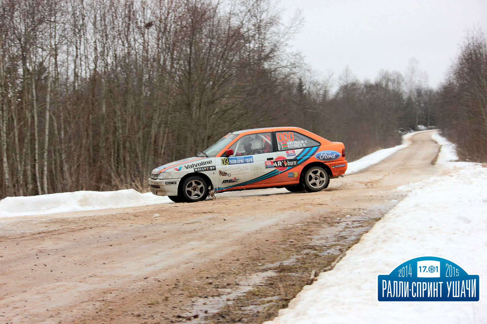
Ралли-спринт "Ушачи 2015"
17 января 2015г. в Ушачах прошел первый этап Кубка Беларуси 2015 по ралли-спринту. Первым он оказался и для нашего экипажа. Ранее мы были только зрителями, но всегда хотелось поучаствовать и посмотреть, что же такое настощее ралли изнутри.Такая возможность предоставилась благодаря Юрию Грищенкову, который предложил взять в аренду Форд Эскорт. Мы оформили судейские лицензии, посетили брифинг для судей, и, погрузив Форд на "козу", стартанули вечером в пятницу 16 января в Ушачи:Считаю - нам повезло с погодой, не было 20-градусного мороза, снега на ДОПах было немного, встречались участки замерзшего гравия, но у нас были зубастый шип, так что "держак" был отличный!Конечно, в первый раз было сложно, все было в новинку и диковинку - и регламенты, и дорожная книга, и много других организационных вещей. Но поскольку мы ехали "нулями", санкции к нам не применялись, так как мы ехали вне зачета. Техника капризничала - Форд постоянно закипал, пришлось даже залить в него бутылку обычной минералки на старте ДОПа, которую мы любезно отдолжили у судьи. В техпарке в перерыве также пришлось устранять технические неполадки. Автомобиль не был готов к гонке стопроцентно:И мы доехали! Наш первый финиш в Ушачах на первой гонке - это, без всякого сомнения, очень большой и эмоциональный подъем. Захватывающее ощущение! В целом, гонка была названа репортерами "гонкой на выбывание", изза нескольких сходов, в первую очередь, из-за "крэша" экипажа Грищенкова/Ревяко, с которыми мы "прописывались"... Этот гоночный сезон 2015 года для Юры уже завершен...Больше фото с этапа смотрите в галерее "Ушачи-2015"
Прочесть >>
или